창호종합기계CHANGHO INC
100. 금속절단기 · 밴드쏘
055-327-4112
055-327-4112
High Speed Steel Circular Saw Machines
원형톱 절단기 12종,
구동 방식으로 나뉩니다
Manual · Pneumatic · Hydraulic · CNC Circular Saw Machines
수동 2종 · 공압 3종 · 유압 반자동 3종 · CNC 4종입니다. 자르실 자재의 지름과 하루 물량, 설치 현장의 전원과 에어 조건을 알려 주시면 맞는 사양을 골라 드립니다.
톱날 Φ250 ~ 485 mm수동 · 공압 · 유압 · CNC 12종
기종 선정 · 견적 문의Line-up
이 페이지의 12종
지름보다 먼저 정해지는 것은 「하루 물량」과 「현장 조건」입니다.
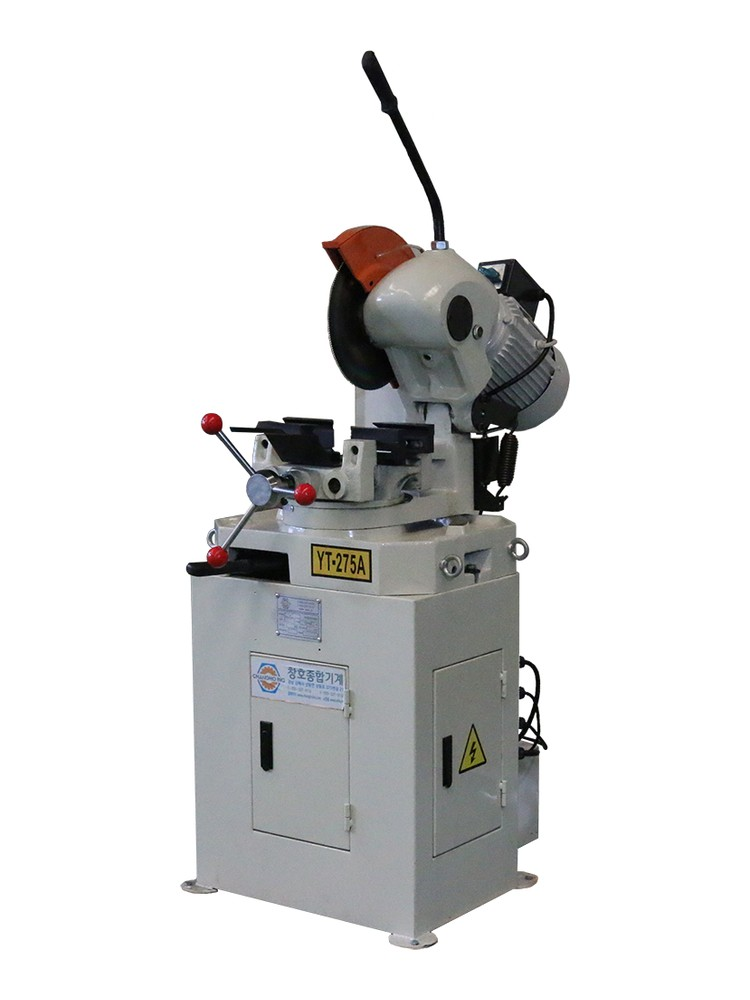
YT-275A — 수동 · Φ250 ~ 300
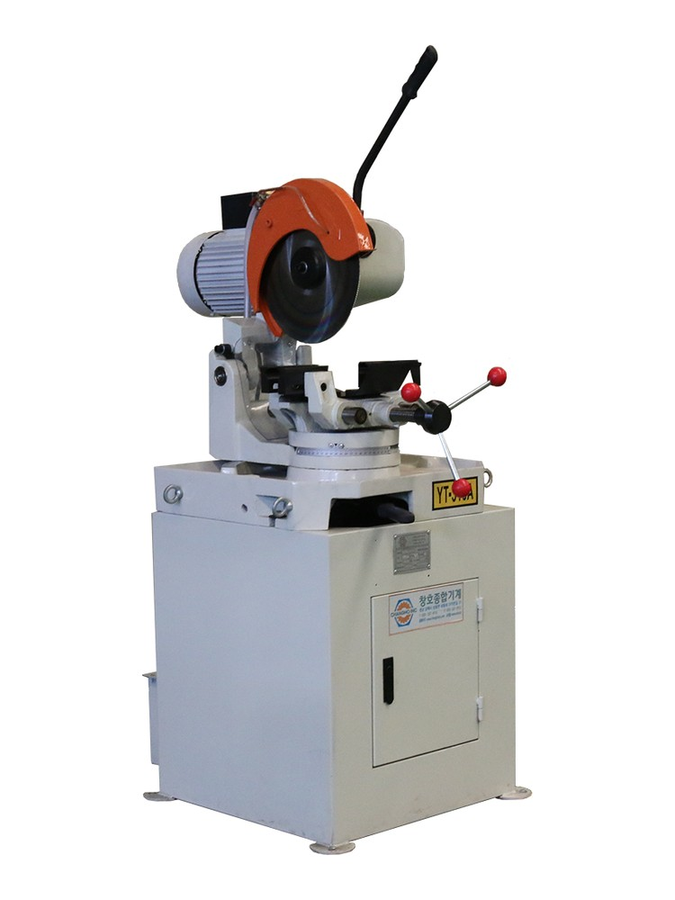
YT-315A — 수동 · Φ250 ~ 325
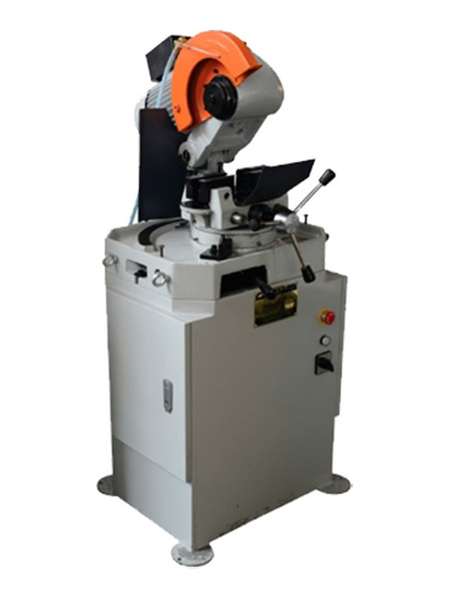
YT-275B — 공압 · Φ250 ~ 275
YT-315B — 공압 · Φ315
YT-400B — 공압 · Φ400
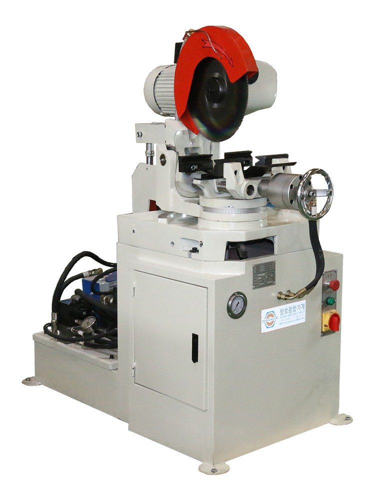
YT-315Y(350) — 유압 · Φ250 ~ 350
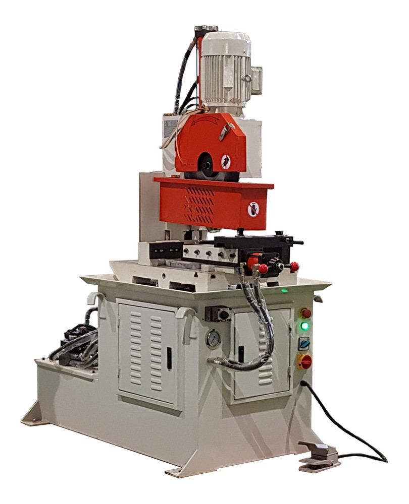
YT-375Y — 유압 · Φ300 ~ 400
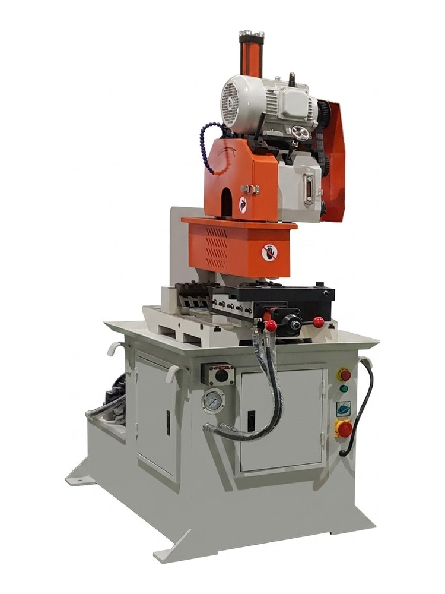
YT-425Y — 유압 · Φ315 ~ 450
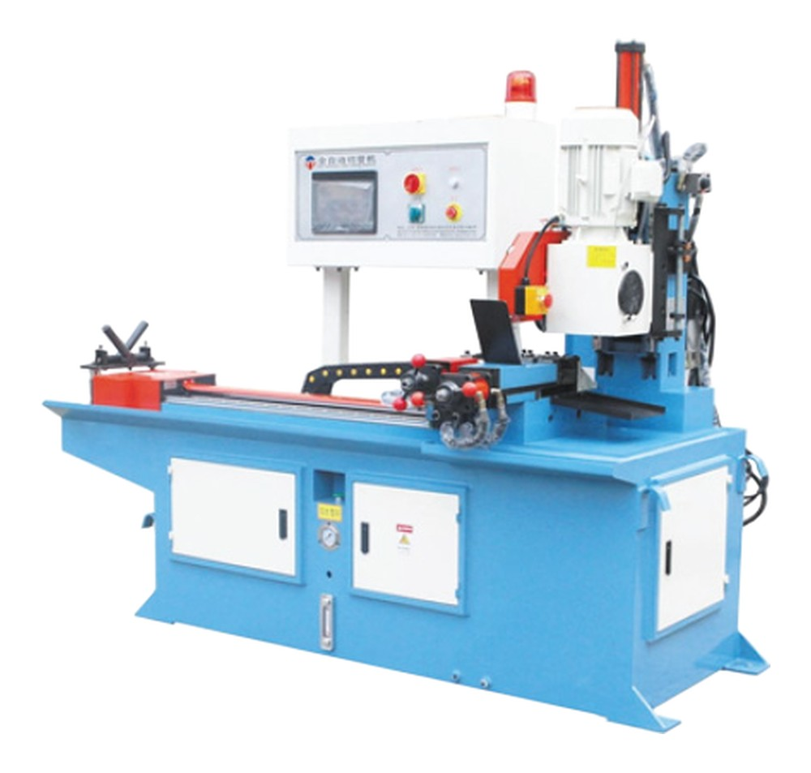
YT-CNC-375-ZY — CNC · Φ275 ~ 400
YT-CNC-425-ZZY — CNC · Φ425 ~ 450
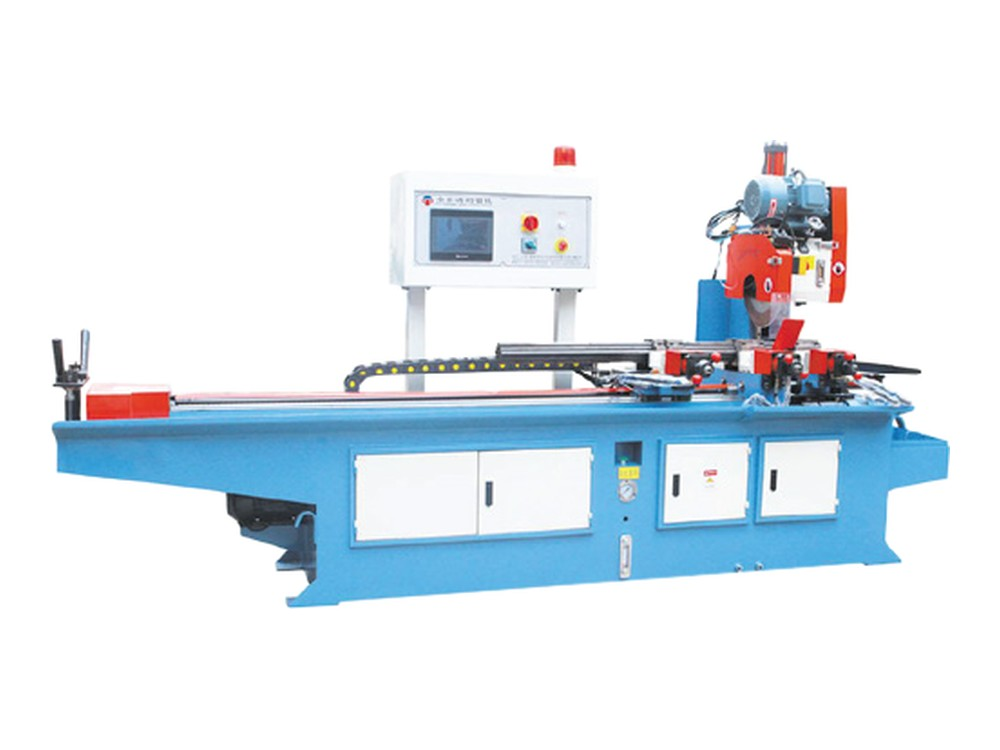
YT-425-CNC-ZZY-L — CNC 자동 · Φ375 ~ 450
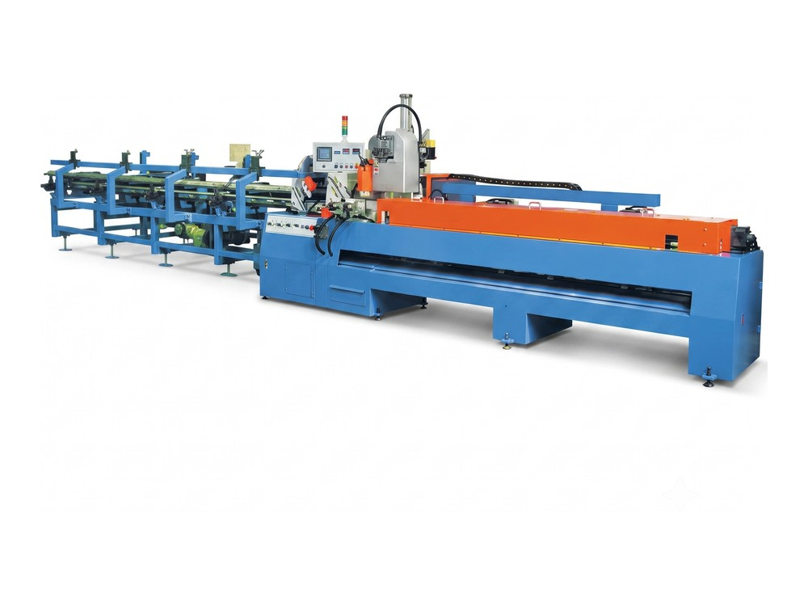
YT-6000-MM-CNC — CNC 9m · Φ375 ~ 485
Index
이 페이지에서 찾으실 곳
기종과 주문 안내로 바로 이동하실 수 있습니다.
YT-275A
YT-315A
YT-275B
YT-315B
YT-400B
YT-315Y(350)
YT-375Y
YT-425Y
YT-CNC-375-ZY
YT-CNC-425-ZZY
YT-425-CNC-ZZY-L
YT-6000-MM-CNC
기종 비교표
밴드쏘 절단기 2종
주문 · 납기
12종
원형톱 구성
Φ250~485
톱날 지름 범위
Φ130
최대 원형 절단
±0.05mm
CNC 가공 정밀도
How to choose
어느 사양을 고를 것인가
지름보다 먼저 정해지는 것은 「하루 물량」과 「현장 조건」입니다.
하루에 몇 개만 자른다
수동 A 계열입니다. 275A · 315A 두 종이고 200~250 kg 으로 설치 면적이 작습니다.
같은 규격을 반복해서 자른다
공압 B 계열입니다. 고정과 해제가 자동이라 한 개당 시간이 줄어듭니다.
에어 배관이 없다
수동 A 계열이나 유압 Y 계열을 보십시오. 공압 B 계열은 6~8 bar 가 필요합니다.
하루 종일 자른다
유압 Y 계열입니다. 클램핑과 헤드 오르내림이 유압으로 움직여 작업자 피로가 줄어듭니다.
길이와 개수를 미리 정해 둔다
CNC 계열입니다. PLC 에 입력해 두면 이송과 절단이 자동으로 반복됩니다.
긴 자재를 그대로 올린다
YT-6000-MM-CNC 입니다. 베드가 9,000mm 라 긴 자재를 그대로 받습니다.
Why it matters
절단면이 기울면 용접에서 그만큼 메우게 됩니다
절단면이 직각에서 벗어나면 용접 틈이 벌어지고, 그 틈을 메우느라 용접량과 후처리가 늘어납니다. 원형톱은 헤드가 내려오는 방식과 본체 무게가 그 직각도를 좌우합니다. 수직 슬라이드 구조와 무거운 프레임을 쓰는 기종일수록 부하가 큰 구간에서도 면이 유지됩니다. 차이는 자재값이 아니라 뒤 공정 시간에서 납니다.
YT-275A
하이스 원형톱 절단기 (수동)
Circular Saw Machine (Manual) · 품목 100002001
01
560 × 800 × 1,300 mm · 200 kg — 12종 중 가장 작은 본체설치 면적이 작아 좁은 작업장에도 놓을 수 있습니다.
02
90° 원형 Φ75 mm · 각형 70 × 70 mm가벼운 파이프와 각재를 여러 규격 조금씩 자르는 작업에 맞는 출력입니다.
03
수냉 윤활 기본 장착 — 톱날 수명이 길어집니다절삭유 순환 펌프가 가공열을 낮춰 하이스 톱날 마모를 줄입니다.
| 모델 | YT-275A |
|---|---|
| 사용 전원 | 380V 삼상 |
| 소비 전력 | 2.0 / 2.4 kW |
| 모터 회전수 | 96 / 48 rpm |
| 공구 규격 | Φ250 ~ 300 mm × 32 mm |
| 가공 능력 | 90° 원형 Φ75 mm · 각형 70 × 70 mm / 45° 원형 Φ65 mm · 각형 60 × 60 mm |
| 기계 크기 | 560 × 800 × 1,300 mm |
| 중량 | 200 kg |
| 원산지 | 중국산 |
| 제품 상태 | 주문제작 · 수입 대행 |
자르실 자재를 알려 주십시오
자재 종류와 외경 · 두께, 하루 물량, 현장의 전원과 에어 조건을 주시면 사양을 골라 드립니다.
055-327-4112 대표
010-4465-4112 휴대전화
geonics@hanmail.net 이메일
YT-315A
하이스 원형톱 절단기 (수동)
Circular Saw Machine (Manual) · 품목 100002002
01
90° 원형 Φ85 mm · 각형 80 × 80 mm — 275A 보다 한 단계 큰 구경275A 로는 받지 못하는 굵기까지 자르면서 조작 방식은 그대로 수동입니다.
02
기어박스 2단 — 절단면이 고르게 나옵니다소재에 맞춰 회전수를 바꾸면 버가 적은 절단면이 나옵니다.
03
전자 제어부가 없는 단순 구조 — 현장 고장이 적습니다제어 기판이 없어 소모품 교체와 정비를 현장에서 바로 합니다.
| 모델 | YT-315A |
|---|---|
| 사용 전원 | 380V 삼상 |
| 소비 전력 | 2.4 / 3.0 kW |
| 모터 회전수 | 96 / 48 rpm |
| 공구 규격 | Φ250 ~ 325 mm × 32 mm |
| 가공 능력 | 90° 원형 Φ85 mm · 각형 80 × 80 mm / 45° 원형 Φ75 mm · 각형 70 × 70 mm |
| 기계 크기 | 600 × 900 × 1,300 mm |
| 중량 | 250 kg |
| 원산지 | 중국산 |
| 제품 상태 | 주문제작 · 수입 대행 |
YT-275B
하이스 원형톱 절단기 (공압)
Circular Saw Machine (Pneumatic) · 품목 100002010
01
공압 자동 클램핑 — 고정과 해제가 자동입니다손으로 조여 주는 시간이 빠져 같은 규격을 반복해 자를 때 한 개당 시간이 줄어듭니다.
02
톱날 Φ250 ~ 275 mm — 공압 3종 중 가장 작은 구경자동 고정은 필요하지만 큰 단면은 쓰지 않는 라인에 맞습니다.
03
가공 정밀도 ±0.1 mm 이내하이스 톱날이 저속으로 회전해 열 변형이 적은 단면이 나옵니다.
| 모델 | YT-275B |
|---|---|
| 공구 규격 | Φ250 ~ 275 mm |
| 가공 범위 | 철 · 비철 단면 절단 |
| 공압 사양 | 6 ~ 8 bar |
| 모터 출력 / RPM | 2.4 / 3.0 kW |
| 가공 정밀도 | ±0.1 mm 이내 |
| 기계 크기 | 600 × 750 × 1,300 mm |
| 중량 | 250 kg |
| 제품 상태 | 주문제작 · 수입 대행 |
YT-315B
하이스 원형톱 절단기 (공압)
Circular Saw Machine (Pneumatic) · 품목 100002011
01
톱날 Φ315 mm — 공압 3종 중 중간 구경톱날 지름은 중간이고 본체는 200 kg 으로 공압 3종 중 가장 가볍습니다.
02
공압 자동 클램핑 — 반복 작업에 맞습니다고정과 해제가 자동이라 같은 길이를 여러 개 자를 때 손이 덜 갑니다.
03
560 × 700 × 1,300 mm · 200 kg — 작은 설치 면적기존 작업대 옆 자리에 그대로 놓을 수 있습니다.
| 모델 | YT-315B |
|---|---|
| 가공 범위 | 철 · 비철 단면 절단 |
| 모터 출력 / RPM | 2.0 / 2.4 kW |
| 공압 사양 | 6 ~ 8 bar |
| 기계 크기 | 560 × 700 × 1,300 mm |
| 중량 | 200 kg |
| 가공 정밀도 | ±0.1 mm 이내 |
| 가공 대상 소재 | 철 |
| 제품 상태 | 주문제작 · 수입 대행 |
YT-400B
하이스 원형톱 절단기 (공압)
Circular Saw Machine (Pneumatic) · 품목 100002012
01
톱날 Φ400 mm — 공압 3종 중 가장 큰 구경공압 3종 가운데 가장 큰 단면을 한 번에 자릅니다.
02
400 kg 본체 — 큰 소재를 물어도 진동이 적습니다본체가 무거워 큰 소재를 고정했을 때 절단 중 진동이 적습니다.
03
가공 정밀도 ±0.1 mm 이내대형 단면에서도 같은 정밀도 기준으로 절단합니다.
| 모델 | YT-400B |
|---|---|
| 가공 범위 | 철 · 비철 대형 단면 절단 |
| 모터 출력 | 3 kW |
| 공압 사양 | 6 ~ 8 bar |
| 기계 크기 | 600 × 800 × 1,300 mm |
| 중량 | 400 kg |
| 가공 정밀도 | ±0.1 mm 이내 |
| 가공 대상 소재 | 철 |
| 제품 상태 | 주문제작 · 수입 대행 |
YT-315Y(350)
하이스 원형톱 절단기 (유압 반자동)
Circular Saw Machine (Semi-auto Hydraulic) · 품목 100002003
01
클램핑과 헤드 오르내림이 유압으로 함께 움직입니다작업자가 눌러 주던 힘을 유압이 대신하므로 하루 물량이 많을 때 피로가 줄어듭니다.
02
톱날 Φ350 mm — 수동형(Φ325)보다 한 단계 큰 지름설치 면적은 수동형과 같으면서 더 두꺼운 자재까지 받습니다.
03
400 kg 프레임 — 수동형(250 kg)보다 무겁습니다본체가 무거워 절단 중 진동이 적고 절단면 품질이 유지됩니다.
| 모델 | YT-315Y(350) |
|---|---|
| 사용 전원 | 380V 삼상 / 에어 |
| 소비 전력 | 3 kW |
| 모터 회전수 | 96 / 48 rpm |
| 공구 규격 | Φ250 ~ 350 mm × 32 mm |
| 가공 능력 | 90° 원형 Φ85 mm · 각형 80 × 80 mm / 45° 원형 Φ75 mm · 각형 70 × 70 mm |
| 기계 크기 | 600 × 900 × 1,300 mm |
| 중량 | 400 kg |
| 원산지 | 중국산 |
| 제품 상태 | 주문제작 · 수입 대행 |
YT-375Y
수직 슬라이드 하이스 절단기 (유압 반자동)
Vertical Slide Circular Saw Machine · 품목 100002004
01
헤드가 선형 가이드를 따라 수직으로 내려옵니다스윙 방식과 달리 수직으로 내려오므로 부하가 큰 구간에서도 절단면 직각도가 유지됩니다.
02
90° 원형 Φ120 mm · 각형 100 × 100 mm — 구조용 자재구조용 각파이프와 환봉을 깊게 자르는 작업에 맞춘 출력과 프레임입니다.
03
750 kg 프레임 — 절단 중 진동이 적습니다본체가 무거워 톱날 수명과 절단면 거칠기가 함께 유지됩니다.
| 모델 | YT-375Y |
|---|---|
| 사용 전원 | 380V 삼상 / 에어 |
| 소비 전력 | 3.3 / 4.0 kW |
| 공구 규격 | Φ300 ~ 400 mm × 32 mm |
| 가공 능력 | 90° 원형 Φ120 mm · 각형 100 × 100 mm |
| 기계 크기 | 780 × 1,160 × 1,900 mm |
| 중량 | 750 kg |
| 원산지 | 중국산 |
| 제품 상태 | 주문제작 · 수입 대행 |
YT-425Y
대구경 하이스 절단기 (유압 반자동)
Heavy Duty Circular Saw Machine · 품목 100002005
01
톱날 Φ450 mm — 유압 3종 중 가장 큰 지름원형 Φ130 mm · 각형 120 × 120 mm 까지 받습니다. 큰 강재를 쓰는 라인에 한 대로 들어갑니다.
02
좌 45° · 우 30° 양방향 경사 절단헤드 프레임을 직접 돌려 별도 지그 없이 양쪽 사선을 자릅니다.
03
950 kg — 유압 3종 중 가장 무거운 본체본체가 무거워 큰 지름으로 자를 때도 단면 거칠기와 톱날 수명이 유지됩니다.
| 모델 | YT-425Y |
|---|---|
| 사용 전원 | 380V 삼상 / 에어 |
| 소비 전력 | 2.8 / 3.6 kW |
| 공구 규격 | Φ315 ~ 450 mm × 32 mm |
| 가공 능력 | 90° (좌 45° · 우 30°) 원형 Φ130 mm · 각형 120 × 120 mm |
| 기계 크기 | 1,300 × 1,400 × 1,900 mm |
| 중량 | 950 kg |
| 원산지 | 중국산 |
| 제품 상태 | 주문제작 · 수입 대행 |
YT-CNC-375-ZY
CNC 1헤드 하이스 원형톱 절단기
CNC Circular Saw Machine (1 Head) · 품목 100002006
01
Mitsubishi PLC — 길이와 수량을 넣으면 자동으로 자릅니다절단 길이와 개수를 입력하면 이송과 절단이 반복되므로 작업자가 옆에 서 있지 않아도 됩니다.
02
전기 스핀들 0 ~ 24,000 rpm · 4 kW소재에 맞춰 회전수를 무단으로 조절해 절단면 거칠기를 관리합니다.
03
리니어 가이드 1,000 mm · 1,500 kg 프레임본체가 무겁고 선형 가이드를 써서 이송 편차가 작고 반복 정밀도가 유지됩니다.
| 모델 | YT-CNC-375-ZY |
|---|---|
| 사용 전원 | 380V |
| 소비 전력 | 4 kW |
| 모터 회전수 | 0 ~ 24,000 rpm |
| 공기 압력 | 6 ~ 8 bar |
| 공기 소비량 | 5 L/min |
| 공구 규격 | Φ275 ~ 400 mm (내경 32) |
| 가공 능력 | 원형파이프 120 mm / 각파이프 100 mm / 리니어 가이드 1,000 mm |
| 기계 크기 | 3,300 × 1,500 × 1,900 mm |
| 중량 | 1,500 kg |
| 원산지 | 중국산 |
| 제품 상태 | 주문제작 · 수입 대행 |
YT-CNC-425-ZZY
CNC 1헤드 하이스 원형톱 절단기 (대구경)
CNC Circular Saw Machine (1 Head, Large) · 품목 100002007
01
톱날 Φ425 ~ 450 mm — 375-ZY 에서 지름만 키운 사양PLC 와 스핀들은 375-ZY 와 같고 톱날 지름이 커져 더 두꺼운 자재를 같은 방식으로 자릅니다.
02
Mitsubishi PLC — 길이와 수량을 넣으면 자동으로 자릅니다길이와 개수를 미리 넣어 두면 규격이 여러 가지여도 세팅 편차가 작습니다.
03
리니어 가이드 1,000 mm · 1,500 kg 프레임본체가 무거워 큰 지름으로 자를 때도 반복 정밀도가 유지됩니다.
| 모델 | YT-CNC-425-ZZY |
|---|---|
| 사용 전원 | 380V |
| 소비 전력 | 4 kW |
| 모터 회전수 | 0 ~ 24,000 rpm |
| 공기 압력 | 6 ~ 8 bar |
| 공기 소비량 | 5 L/min |
| 공구 규격 | Φ425 ~ 450 mm (내경 32) |
| 가공 능력 | 원형파이프 120 mm / 각파이프 100 mm / 리니어 가이드 1,000 mm |
| 기계 크기 | 3,300 × 1,500 × 1,900 mm |
| 중량 | 1,500 kg |
| 원산지 | 중국산 |
| 제품 상태 | 주문제작 · 수입 대행 |
YT-425-CNC-ZZY-L
CNC 하이스 원형톱 절단기 (자동 자재 공급)
CNC Circular Saw with Auto Bar Feeder · 품목 100002008
01
자재 자동 공급 + 유압 자동 — 작업자 없이 이어서 자릅니다봉재 이송과 유압 클램핑이 함께 움직여 반복 제단에서 작업자가 개입하는 횟수가 줄어듭니다.
02
원형 높이 140 mm · 사각 높이 130 mm — 12종 중 최대 높이두꺼운 구조재를 쓰는 라인에 한 대로 들어갑니다.
03
1,500 kg 프레임 — 부하가 큰 절삭에서도 진동이 적습니다본체가 무거워 큰 단면에서도 절단면 직각도가 유지됩니다.
| 모델 | YT-425-CNC-ZZY-L |
|---|---|
| 사용 전원 | 380V |
| 소비 전력 | 4 kW |
| 공구 규격 | Φ375 ~ 450 mm |
| 가공 능력 | 원형파이프 높이 140 mm / 사각파이프 높이 130 mm |
| 기계 크기 | 3,300 × 1,500 × 1,900 mm |
| 중량 | 1,500 kg |
| 원산지 | 중국산 |
| 제품 상태 | 주문제작 · 수입 대행 |
YT-6000-MM-CNC
CNC 하이스 원형톱 절단기 (9 m 롱베드)
CNC Circular Saw Machine (9m Long Bed) · 품목 100002009
01
9,000 mm 베드 — 긴 자재를 그대로 올립니다긴 자재를 미리 잘라 두지 않고 한 번에 올려 정해진 길이로 나눕니다.
02
5,000 kg — 12종 중 가장 무거운 본체본체가 무거워 긴 자재를 자를 때 진동이 적습니다.
03
가공 정밀도 ±0.05 mm 이내다른 기종(±0.1 mm)보다 좁은 공차로 절단합니다.
| 모델 | YT-6000-MM-CNC |
|---|---|
| 사용 전원 | 380V |
| 소비 전력 | 4 kW |
| 절삭유 장치 | 펌프 60W |
| 구동 방식 | 유압 반자동 |
| 공구 규격 | Φ375 ~ 485 mm |
| 가공 능력 | 원형파이프 높이 90 mm / 사각파이프 높이 85 mm |
| 가공 정밀도 | ±0.05 mm 이내 |
| 기계 크기 | 9,000 × 2,000 × 2,000 mm |
| 중량 | 5,000 kg |
| 원산지 | 중국산 |
| 제품 상태 | 주문제작 · 수입 대행 |
Model Line-up
12종 한 표로 비교
하루 물량으로 수동 · 공압 · 유압 · CNC 를 먼저 가르고, 그 안에서 톱날 지름을 고르십시오.
| # | 모델 | 구동 · 톱날 | 능력 · 중량 | |
|---|---|---|---|---|
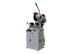 | 1 | YT- | 수동 · Φ250 ~ 300 | 원형 Φ75 · 200 kg |
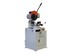 | 2 | YT- | 수동 · Φ250 ~ 325 | 원형 Φ85 · 250 kg |
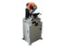 | 3 | YT- | 공압 · Φ250 ~ 275 | 철 · 비철 · 250 kg |
| 4 | YT- | 공압 · Φ315 | 철 · 비철 · 200 kg | |
| 5 | YT- | 공압 · Φ400 | 철 · 비철 · 400 kg | |
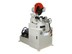 | 6 | YT- | 유압 · Φ250 ~ 350 | 원형 Φ85 · 400 kg |
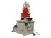 | 7 | YT- | 유압 · Φ300 ~ 400 | 원형 Φ120 · 750 kg |
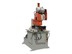 | 8 | YT- | 유압 · Φ315 ~ 450 | 원형 Φ130 · 950 kg |
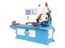 | 9 | YT- | CNC · Φ275 ~ 400 | 원형 Φ120 · 1,500 kg |
| 10 | YT- | CNC · Φ425 ~ 450 | 원형 Φ120 · 1,500 kg | |
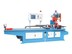 | 11 | YT- | CNC 자동 · Φ375 ~ 450 | 높이 140 · 1,500 kg |
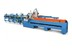 | 12 | YT- | CNC 9m · Φ375 ~ 485 | 높이 90 · 5,000 kg |
· 중량과 외형은 본체 기준입니다. · 절단 능력은 소재와 두께에 따라 달라집니다 — 각 기종 제원표를 함께 보십시오.
Order & Shipping
주문 · 출고 안내
납기·사양·소모품·전원·시연·사후 관리를 한자리에 모았습니다.
재고 · 납기
주문제작 · 수입 대행 기종입니다. 사양을 확정해 주시면 그 시점의 납기를 안내해 드립니다.
사양 확인
자르실 자재의 종류와 외경 · 두께만 알려 주시면 맞는 기종을 골라 드립니다.
톱날 · 소모품
톱날과 밴드는 소모품입니다. 규격별로 보유하고 있어 부품 대기 없이 처리합니다.
전원 · 에어 조건
설치 현장의 수전 용량과 에어 압력을 미리 확인해 주십시오. 각 기종 제원표에 필요한 값이 있습니다.
사전 시연
김해 전시장에서 진행합니다. 자르실 자재를 직접 가져오셔도 됩니다.
사후 관리
수리는 입고 처리합니다. 소모·수리 부품을 자체 보유합니다.
Channels
채널 안내
기종 선정 · 견적 문의
자르실 자재의 종류와 지름 · 두께, 하루 물량, 설치 현장의 전원과 에어 조건을 알려 주시면 맞는 기종을 골라 드립니다.
055-327-4112 대표
010-4465-4112 휴대전화
geonics@hanmail.net 이메일